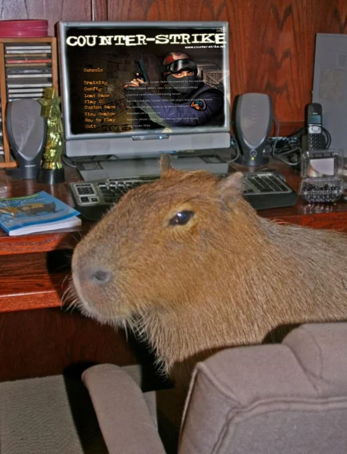

Version 0.0.9
Nathen's Impeccable Index

Links
Github Repository
Assignment List
Complete Assignments
t3a01-basic-web-page-nathen.html
t3a02-lists-tables-nathen.html
t3a03-forms-nathen.html
t3a04-css-nathen.html
t3a05-input-output-nathen.html)
t3a06-variables-nathen.html
t3a07-decisions-nathen.html)
t3a08-loops-nathen.html
t3a09-functions-nathen.html
t3a10-events-nathen.html
t3a11-arrays-nathen.html
t3a12-objects-nathen.html
t3a13-classes-nathen.html
t3a14-extend-class-nathen.html
t3a15-review-nathen.html
t3a16-spy-nathen.html
t3a17-move-backround-nathen.html
t3a18-canvas-nathen.html
t3a19-local-storage-nathen.html
t3a20-translate-nathen.html
t3a21-sound-by-nathen.html
t3a22-game-template-nathen.html
t3a23-sort-nathen.html
GameLvl-1
CapyCoinClicker (Final Game)